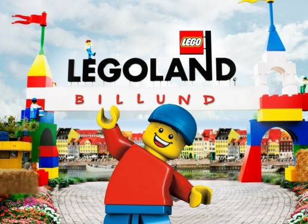

Czym jest Lego?
Każdy chociaż raz słyszał o tej firmie produkującej zabawki, ponieważ Lego opanowało rynek
międzynarodowy już dziesiątki lat temu. Ale jak się im to udało? Głównie za sprawą
świetnego pomysłu- zabawki te to nic innego jak plastikowe części - potocznie nazywane
klockami - taki jeden klocek nie ma w sobie nic szczególnego, jednak specjalne wypustki
i gniazda pozwalają na wiele kombinacji łączenia. Dzięki temu ograniczeniem dla osoby bawiącej
się jest tylko jej wyobraźnia.
Aktualnie można nie tylko kupić skrzynki z pojedynczymi częściami,
ale w większości przypadków ludzi interesują zestawy. Na początku zestawy były tylko
spod przedsiębiorstwa Lego, jednak ogromnym sukcesem okazało się nawiązywanie współpracy Lego
z różnymi markami (najczęściej posiadające własne uniwersum filmowe) takimi jak ,,Star Wars",
,,Harry Potter", czy ,,Minecraft". Dzięki temu zabawkami Lego nie tylko fascynują się dzieci, ale
także dorośli, fani filmowi, czy tzw. kolekcjonerzy.

Jak duże jest Lego?
Przez to, iż marka ma ogromne popyt i podaż klocki są stale produkowane i z
każdym dniem ich ilość się powiększa. W samej Polsce jest 6 sklepów z klockami Lego, a na świecie jest ich
ponad 700- największy z nich znajduje się w Londynie w Wielkiej Brytanii. Fabryk jest zaledwie 46, jednakże
samych klocków jest ponad 400 miliardów, a te złączone wszystkie razem są 10 razy dłuższe od odległości Ziemi
od Księżyca.
Wystawy Lego

Na całym świecie od wielu lat można napotkać wystawy klocków Lego. Są to tymczasowe, lub pozostawione na stałe
oficjalne zestawy oraz własne budowle. Myśląc o takim wydarzeniu większość osób wyobraża sobie pare rzadkich
zestawów i parę amatorskich budowli, ale często rozwija się to do ogromnych miniatór budynków, obrazów 3D czy
figur realnych rozmiarów.

Do stałych ekspozycji można zaliczyć także Legolandy- są to parki rozrywki w pełni
poświęcone klockom Lego. Jest wiele rodzajów atrakcji: od roller coasterów, przez elementy edukacyjne po zwykłe
wystawy, które często osiągaja wielkości kilkuset metrów kwadratowych. Aktualnie na świecie jest 11 Legolandów,
a kolejne 5 jest w planach budowy. Odwiedzenie któregoś z Legolandu jest marzeniem nie jednego dziecka, a wiele
osób uważa odwiedzenie Legolandu za obowiązek prawdziwego fana. Najstarszy Legoland znajduje się w rodzinnym
mieście- Billund, a największy znajduje się w Windsor zajmując powierzchnię 61 ha.